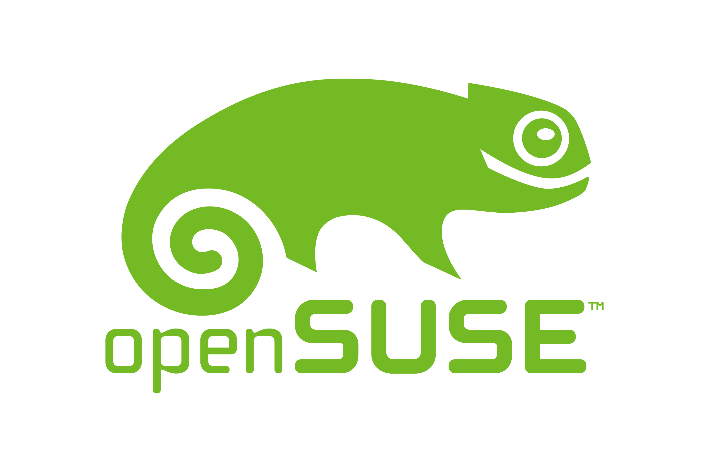

Opensuse:
Uma distro patrocinado e mantido pela comunidade SUSE (Que é uma empresa que também desenvolve
o SUSE Linux Enterprise) e sim é um sistema operacional completo tipo Windows ou MacOS, mas totalmente
livre, gratuito e personalizável.

Informações importantes:
Gerenciador de pacotes: RPM (Red Hat Package Manager)
Filosofia: Open source e comunitário
Modelo:openSuse leap e openSuse Tumbleweed
Dificuldade: Moderado (Não é tão fácil como Ubuntu ou Debian)
Vantagens:
1) Extramente estável.
2) Excelente ferramenta de administração com YaST.
3) Boa documentação e comunidade ativa.
4) Suporte sólido para servidores e ambientes corporativos.
Desvantagens:
1) Comunidade menor que o Ubuntu/Debian
2) Alguns softwares proprietários podem ter suporte limitado.
3) Rolling release pode causar problemas de instabilidade.
4) Curva de aprendizado ligeiramente maior.